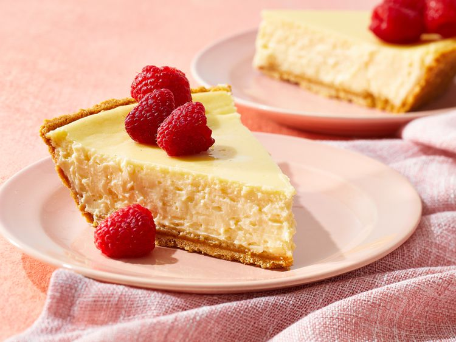

Cheesecake Recipe

Description
This is an easy sour cream cheesecake. It's delicious plain, or you may top it with fruit pie filling.
Ingredients
- Pie crust
- Cream cheese
- Sour cream
- Eggs
- White sugar
- vanilla extract
Steps
- Gather all ingredients.
- Preheat the oven to 325 degrees F (165 degrees C). Place pie crust in a pan.
- Cream together cream cheese and sugar.
- Add eggs one at a time, blending well.
- Add sour cream and vanilla.
- Pour into prepared crust in the pan.
- Bake in the preheated oven until the cake is set and jiggles evenly across the top when
lightly shaken, 60 to 70 minutes.
- Run a knife around the outside edge but leave the cake in the pan.
Let cool on the counter, then place in refrigerator.
Remove from pan when completely chilled, and serve.